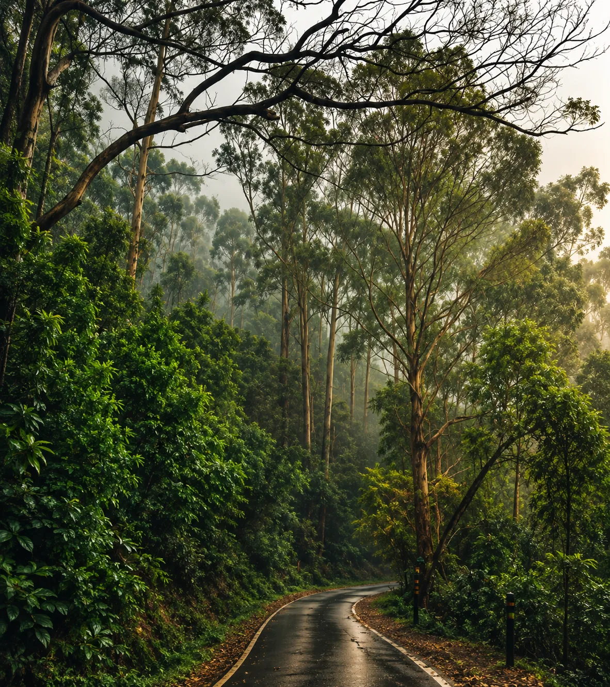
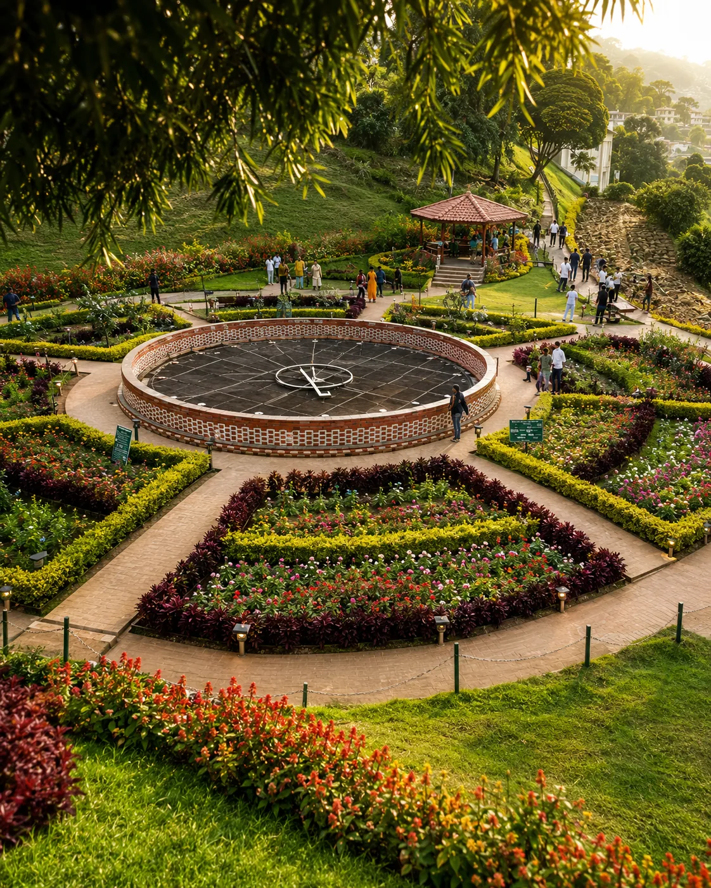
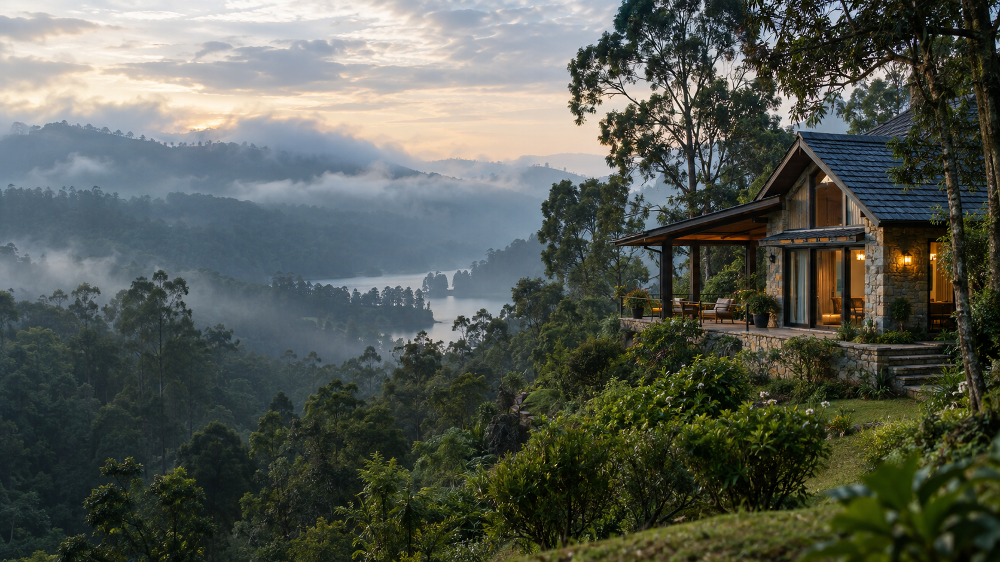
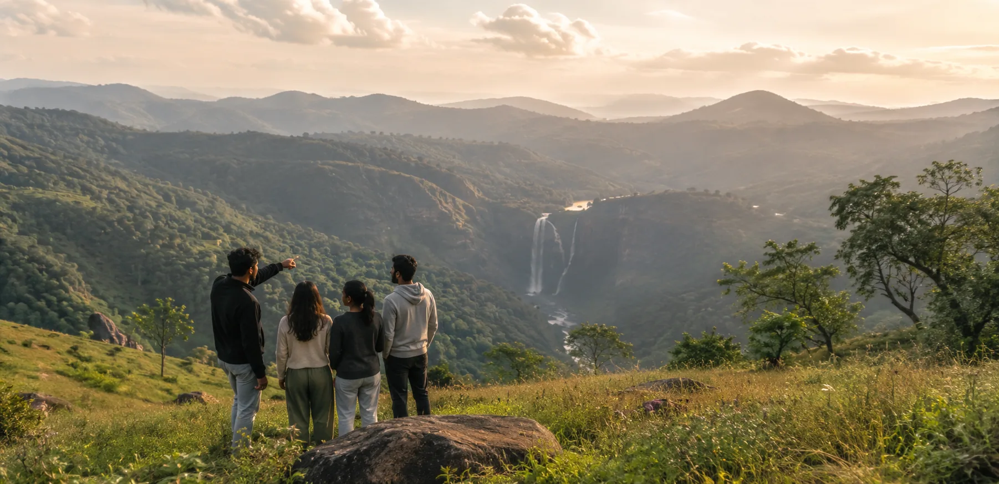

Palani to Oddanchatram
A short, open stretch of road leaving the temple town — quick to cover if you get moving straight after darshan.
PALANI KODAIKANAL
A private cab is the easiest way to cover the 65 km climb into the hills — door-to-door, on your own schedule, with a driver who already knows the ghat road well.

PALANI KODAIKANAL
The Distance
By road, Palani and Kodaikanal sit about 65 km apart, one of the shorter gateway routes into the hills, running through Oddanchatram before the road turns uphill. The final stretch is the ghat section — around 20 km of switchbacks that gain most of Kodaikanal's 2,100 metre elevation in one go, which is why the last leg feels longer than the distance suggests.
On the Road
Typical road journey: 2–2.5 hours
A non-stop run in a private cab takes about 2 to 2.5 hours. Add a temple visit at Palani or a photo stop on the ghat road and your total time out naturally stretches, though the drive itself rarely goes past 3 hours. Early departures after darshan usually clear traffic fastest, while afternoon starts can run into slower ghat traffic during peak tourist season.
The Journey
One road covers the whole trip, but it changes character twice — flat plains near Oddanchatram, then a mountain climb into Kodaikanal itself.
A short, open stretch of road leaving the temple town — quick to cover if you get moving straight after darshan.
The land starts to fold into hills here — a good stretch for a quick break before the road narrows and starts climbing.
Roughly 20 km of hairpin bends climbing through forest, gaining most of Kodaikanal's elevation — this is where a driver who knows the road matters most.
The ghat road opens out near Kodaikanal Lake, and your cab drops you directly at your cottage or hotel door.


 Plain Roads
Plain Roads
Fare Sheet
Palani → Kodaikanal, one-way starting fares by vehicle. Round trip and multi-day rates are quoted separately once we know your dates.
Toll and hill-station entry charges, if any, are added at actuals.
Book in Minutes
Two Ways to Book
Best for:
Pilgrims and travellers who only need the drop to Kodaikanal after their temple visit, and will return a different way or on a later date.
Best for:
Guests keeping the same cab and driver for the whole trip, with a fixed return date — usually the better rate per kilometre.

Darshan First, Drive Up Next
Yes — many travellers combine their Palani Murugan temple visit with onward travel to Kodaikanal, and your driver can wait near the temple, bus stand or your hotel until you're ready to leave.
Beyond the Transfer
Yes — combine your cab with stay and sightseeing, from a single-day transfer-and-tour to a full three-day trip.
Day
↓
Transfer + Sightseeing
Days
↓
Transfer + Stay + Sightseeing
Days
↓
Transfer + Stay + Sightseeing
Most Booked
Transfer from Palani, one night's stay, and a full day covering the lake, Coaker's Walk and Pillar Rocks — the pace most first-time visitors prefer.

A Day in Kodaikanal
Yes — the same cab that brings you in can spend a full day on local sightseeing, at your pace rather than a fixed tour schedule.
A slow lap around the star-shaped lake, ideal while the morning mist is still thinning over the water.
A short cliffside walk with valley views on a clear day.
Your driver waits while you eat — no need to rush a meal to stay on schedule.
Three granite cliffs rising straight out of the forest — one of Kodaikanal's most photographed viewpoints.

A last stop before the light fades — the widest open view on the route back into town.
Once You're There
A short list of the stops most cab itineraries build around, from the lake at the centre of town to the quieter viewpoints just outside it.
Recommended First Stop
Kodaikanal Lake
The star-shaped lake at the centre of town, best walked in the early morning light.
Coaker's Walk
A cliffside path with clear-day valley views, an easy 15-minute stop.
Pillar Rocks
Three sheer granite cliffs, one of the most photographed spots in the hills.
Pine Forest
Quiet forest trails near Vattakanal, a short detour from the main sightseeing loop.
Recommended Last Stop
Bryant Park
Manicured gardens in the town centre, an easy add-on before heading back.
Why a Cab
Door-to-door travel
Flexible departure time
Comfortable, checked vehicles
Family-friendly journey
Suited to group travel
Flexible sightseeing stops
Questions
01 · Distance
01How far is Palani from Kodaikanal?
The road distance is about 65 km via Oddanchatram, which takes roughly 2 to 2.5 hours by cab depending on traffic and the ghat road.
02Which towns does the route pass through?
The drive runs through Oddanchatram, the main midway stop before the ghat climb into Kodaikanal.
03Is the distance different for a return trip?
No — the return covers the same 65 km, though total billed kilometres are usually higher on a round trip since the cab also returns empty or waits for you.
04Is there a shorter route available?
The Oddanchatram route is the standard and shortest driveable option; it's also one of the shorter gateway routes into Kodaikanal overall.
02 · Journey
05How long does the journey take?
Typically 2 to 2.5 hours non-stop. Add extra time if you're combining the drive with a temple visit at Palani.
06Is the ghat road safe at night?
It's driveable, but we recommend arriving before dusk where possible — the hairpin bends are easier to judge in daylight.
07Does monsoon season affect the drive?
Heavy rain can slow the ghat section and occasionally cause short closures for landslide clearance — we'll flag this if it affects your travel date.
08Can we stop for photos on the way?
Yes — most drivers are used to short viewpoint stops on the ghat road; just mention it when booking.
03 · Fare
09How much does the cab cost?
Sedans start around ₹1,600 one-way, SUVs around ₹2,300, and tempo travellers around ₹3,600, depending on your date.
10Is the fare different for a round trip?
Yes — round trips are usually a better per-kilometre rate since the same cab and driver stay with you for the return leg too.
11Are tolls included in the price?
Tolls and any hill-station entry charges are added at actuals and confirmed clearly before you book, not added as a surprise later.
12Do prices change during peak season?
Yes, slightly — weekends, festival weeks and holiday periods in both Palani and Kodaikanal see higher demand, so fares can run a bit above the base rates shown.
13Is there a night charge?
A small night allowance may apply for pickups between 10 pm and 6 am — this is included in your quote upfront.
04 · Booking
14How do I book a cab?
Share your pickup point, travel date and preferred vehicle over WhatsApp or by phone, and we confirm your driver and fare the same day.
15How far in advance should I book?
A day's notice is usually enough, though weekends and festival periods are safer booked a few days ahead.
16Can I change my pickup time later?
Yes, message us and we'll adjust it with your driver, as long as it's not last-minute on a high-demand date.
17Do you require advance payment?
A small advance may be requested to confirm the booking; the balance is settled with the driver at the end of the trip.
05 · Temple Pickup
18Can I combine a temple visit with the transfer?
Yes — many travellers visit the Palani Murugan temple first and have their cab waiting to continue straight on to Kodaikanal afterward.
19Can the driver wait during darshan?
Yes — just let us know an approximate waiting time when you book, and your driver will be ready near the temple or bus stand.
20Where do I meet the driver?
Your driver waits at an agreed point near the temple, bus stand or your hotel, and calls or messages when you're ready.
21Is railway station pickup also available at Palani?
Yes — Palani railway station pickups work the same way as temple or bus stand pickups.
06 · Vehicles
22What vehicles are available?
Sedans for up to 4 passengers, SUVs or Innovas for up to 7, and tempo travellers for groups of 9 to 17.
23Which vehicle is best for hill roads?
SUVs handle the ghat bends most comfortably for families or anyone prone to motion sickness, though sedans manage the route fine too.
24Is luggage space a concern?
Sedans fit 2 to 3 medium bags comfortably; for more luggage or bulky items, an SUV is the safer choice.
25Can I request a specific car model?
We'll try to match a specific model within the same vehicle class, subject to availability on your date.
07 · Packages
26Can I book a multi-day package?
Yes — one, two and three day packages combine your Palani transfer with stay and sightseeing in Kodaikanal.
27What's included in the 2-day package?
Your transfer from Palani, one night's stay, and a full day of sightseeing covering the lake, Coaker's Walk and Pillar Rocks.
28Can the package be customized?
Yes — tell us your group size, preferred stay and the sights you want included, and we'll adjust the package before booking.
29Does the package include stay?
Two and three day packages include stay; the one-day package is transfer and sightseeing only.
30Is sightseeing by the same cab?
Yes — the same vehicle and driver typically handle both your transfer and any local sightseeing in the package.
One Last Step
Palani → Kodaikanal
One-way • Round-trip • Temple Pickup
Book Your Cab